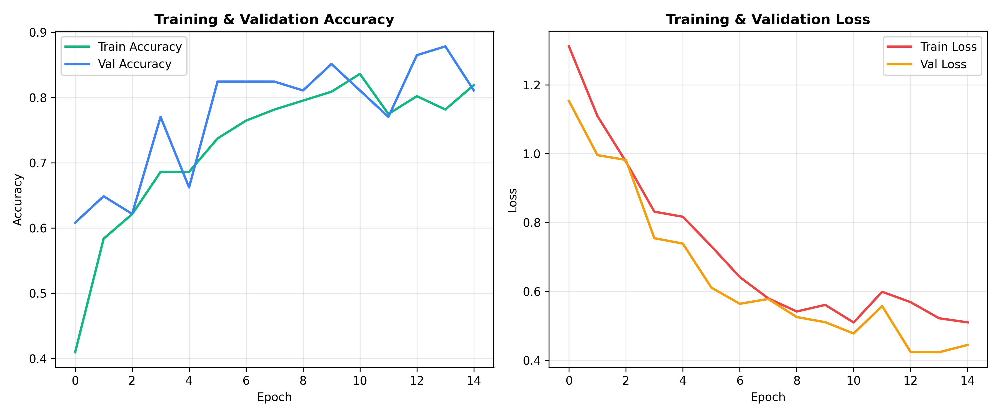
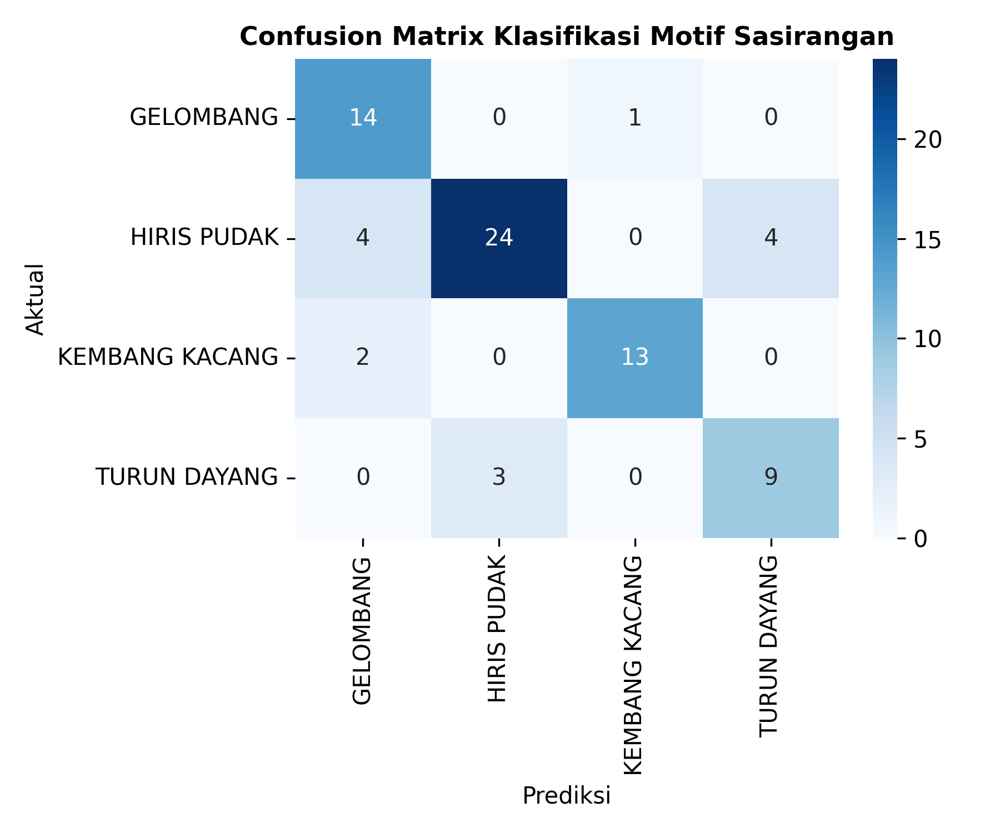

Klasifikasi Otomatis Motif Sasirangan
Otentikasi cerdas untuk mengenali keaslian motif tradisional Banjar beserta filosofi budayanya.
Klik untuk Unggah atau Tarik Foto ke Sini
Format JPG, PNG, JPEG (Maksimal 10 MB)
Belum Ada Gambar yang Dianalisis
Silakan unggah foto kain Sasirangan atau klik salah satu sampel di sebelah kiri untuk melihat hasil prediksi AI.
MOTIF GELOMBANG
Makna: Ketabahan & Dinamika Kehidupan
-
-
Peta Sebaran Spasial Sentra IKM Sasirangan
Pemetaan sebaran 249 unit industri Sasirangan dan ekosistem tekstil kreatif di 5 kecamatan Kota Banjarmasin.
Struktur Ekonomi & Aglomerasi Sentra
Eksplorasi data sektoral berbasis Portal Satu Data Kota Banjarmasin.
Sebaran Industri Kreatif per Kecamatan
Total: 249 UnitTop 6 Kelurahan Aglomerasi Sasirangan
Titik Hotspot KlasterEvaluasi Metrik Model AI (Training Curve & Confusion Matrix)
Hasil pengujian empiris Convolutional Neural Network pada 4 kelas motif kain Sasirangan

Kurva Akurasi & Loss Pelatihan (15 Epochs)

Confusion Matrix Pengenalan 4 Motif Tradisional
Eksplorasi Data 249 Industri
Pangkalan data riil industri tekstil & Sasirangan hasil scraping Portal Satu Data Kota Banjarmasin.
| No | Nama Industri | Pemilik / PJ | Kecamatan | Kelurahan | Alamat | Klasifikasi KBLI |
|---|